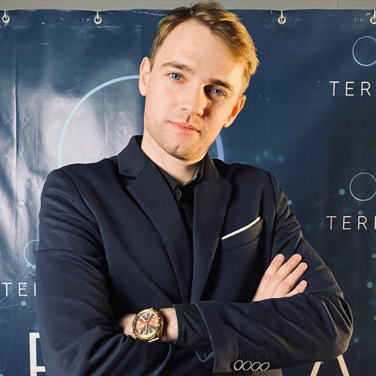

Head of BIM & Design Automation · Lead Architect on PIK projects · Founder of CoRos
Руководитель BIM и цифровизации проектирования · ведущий архитектор на проектах ПИК · автор CoRos

My own BIM application, built from scratch as a faster, AI-native alternative to Revit for architecture and MEP. Desktop (Windows) and Android, one Rust core.
Собственная BIM-программа с нуля — более быстрая альтернатива Revit для архитектуры и инженерных сетей, со встроенным ИИ. Windows и Android, одно ядро на Rust.
Rust core, GPU rendering (wgpu / DirectX 12). Sections, elevations, PDF, IFC and schedules run in parallel: ×9–11 on a 20-storey model with 10,880 walls and 3,627 openings.
Ядро на Rust, отрисовка на видеокарте (wgpu / DirectX 12). Разрезы, фасады, PDF, IFC и спецификации считаются параллельно: ×9–11 на 20-этажной модели с 10 880 стенами и 3 627 проёмами.
Piping and ductwork with A* routing. Clash detection on a real water-supply floor: 106,491 pairs checked, 40 clashes found and auto-resolved to 0, network integrity preserved.
Трубы и воздуховоды с трассировкой A*. Коллизии на реальном техэтаже водоснабжения: проверено 106 491 пар, найдено 40, обойдено автоматически до 0, сеть цела.
Networks designed in CoRos land in Revit as native families: 100% of 25,360 connections on one building, 99.88% on another.
Сети из CoRos приходят в Revit родными семействами: 100 % из 25 360 связей на одном объекте, 99,88 % на другом.
Built-in chat assistant that edits the model by plan; Android app with touch UI on the same engine; interface designed in Figma (19 ribbon tabs, 360 commands).
Встроенный ассистент правит модель по плану; Android-версия с сенсорным интерфейсом на том же ядре; интерфейс спроектирован в Figma (19 вкладок, 360 команд).
Tools in production use at the design firm and on PIK projects.
Инструменты в работе проектной компании и на проектах ПИК.
Structural analysis (LIRA-SAPR) → reinforcement in Revit automatically, with detailing rules, bend checks and weight reports. Optimised rules cut steel by 22.8% (185.4 → 143.1 t) on a real building while staying within code.
Расчёт ЛИРА-САПР → армирование в Revit автоматически: правила конструирования, проверка гиба, отчёт по массе. Оптимизированные правила сократили арматуру на 22,8 % (185,4 → 143,1 т) на реальном здании в пределах норм.
An LLM reads client briefs — Word, PDF, scans — and builds the scope of work and fee proposal in 1–2 minutes. Runs in the company's office.
Нейросеть читает ТЗ заказчика — Word, PDF, сканы — и за 1–2 минуты собирает состав работ и коммерческое предложение. Работает в офисе компании.
Daylight/insolation analysis of 59 surrounding buildings (24,961 window points) for a PIK site; GPU search of apartment layouts — from 4.1 to 465–562 valid variants per second.
Инсоляция 59 окружающих домов (24 961 расчётная точка) для участка ПИК; перебор планировок на видеокарте — с 4,1 до 465–562 допустимых вариантов в секунду.
A multi-agent system that runs design tasks end-to-end: plans the work, drives Revit/AutoCAD, checks results by code and reports.
Многоагентная система, которая ведёт проектные задачи от начала до конца: планирует, работает в Revit/AutoCAD, проверяет результат кодом и отчитывается.
Leads BIM modeling and digitalisation at a design firm: standards, automation, AI adoption, KPI of output per engineer.
Руководит BIM-моделированием и цифровизацией в проектной компании: стандарты, автоматизация, внедрение ИИ, метрики выработки на инженера.
Residential complexes for PIK, Russia's largest developer: concept, BIM model, coordination of disciplines.
Жилые комплексы для ПИК — крупнейшего девелопера России: концепция, BIM-модель, координация разделов.
~600 projects: residential, public buildings, HVAC, plumbing, utilities. Revit, AutoCAD/MagiCAD, Rhino.
~600 проектов: жильё, общественные здания, ОВ, ВК, наружные сети. Revit, AutoCAD/MagiCAD, Rhino.
A digital twin where analysis = model = construction. From site massing to structure, MEP, cost and developer returns — one model, computed in minutes, accountable to the real building.
Цифровой двойник: расчёт = модель = стройка. От массинга участка до конструкций, инженерии, стоимости и доходности девелопера — одна модель, считается за минуты и отвечает за реальное здание.